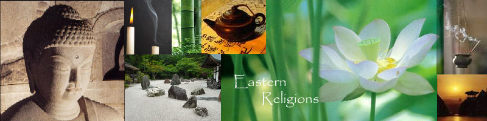

Eastern Religions
PHIL 18 is an introductory course on Eastern Religions. It aims to help students gain a good understanding of major Eastern religions and broaden their worldviews. We will study Hinduism, Buddhism, Confucianism, Daoism and Shinto. We will learn how the theological, mythological, ritual, ethical, social and experiential dimensions of religion intertwine with each other to form different worldviews and ways of life. Students will also learn how to compare and evaluate various religious teachings and see how they may affect one's life.